BroadMoney
People signed up, then left. I redesigned the app until they stayed, sent money home and came back.
- Role
- Senior Product Designer, all of design
- Company
- BroadMoney Payment, UK–Nigeria remittance
- Platforms
- iOS, Android, web and brand
- Result
- First-transfer drop-off 55% → 22%
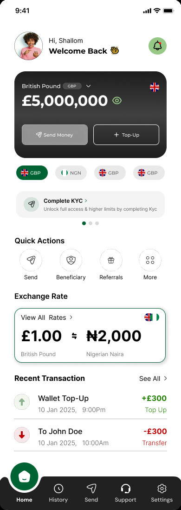
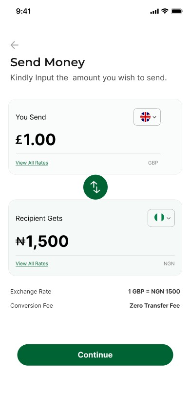
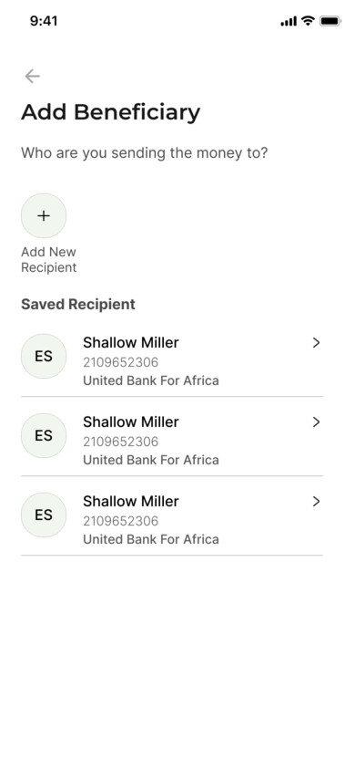
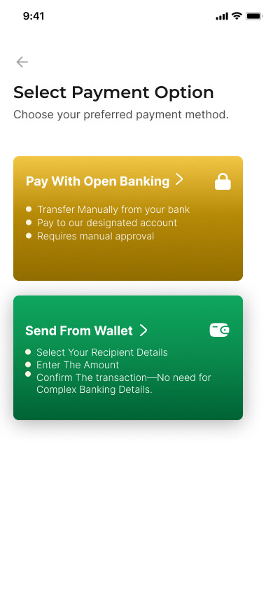
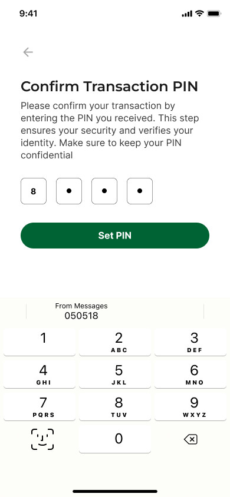

A good product that nobody was using.
I joined BroadMoney in October 2024 as the senior product designer, working with the team. The app already existed. The problem was easy to say and hard to fix: it wasn’t converting. People signed up and never sent money, so the company had very few customers. It was a design problem and a marketing problem at once, and I took on both.
Sign-ups, but almost no first transfers.
“Let me send money home first. Prove who I am later.”
Win trust in the first minute, in the app and on the website.
First-transfer drop-off. It started at 55%.
Before I moved a pixel, I watched.
I read the funnel first: Microsoft Clarity showed a 54.75% drop-off on the site before the redesign. I studied how Wise and Lemfi onboard people who are nervous about sending money. Then I interviewed current users about how they really used the app: when they opened it, what they were sending, and where they gave up.
No big research budget. Just the data we had, two strong competitors and the people already using the product.
The first version worked. Then support started hearing the same two complaints.
My first prototype onboarded people in a way that made sense, and conversion went up. Then the same two complaints kept coming in:
1. KYC was long and compulsory. Documents, address and details, all before you could do anything. People got tired and left.
2. Big balances didn’t fit. On the dashboard, large amounts broke onto a second line.
What if there was one card, not five?
The CTO wanted several smaller cards on the dashboard, so people could see BroadMoney wasn’t only for pounds and was ready for more currencies. I compared both, argued for one full card at a time, and got pushback from the CTO and some of the team.
So I suggested we stop debating and watch real people use it.
Usability testing with 8 people (4 inside the company, 4 outside), plus support tickets about long balances, made the answer obvious. We changed the design. Disagreeing well, with evidence, is part of the job.
One big card. Any amount fits.
The balance comes first, in full. Pills under the card switch currency, so there’s still room for every currency BroadMoney adds later. The CTO’s goal, kept.

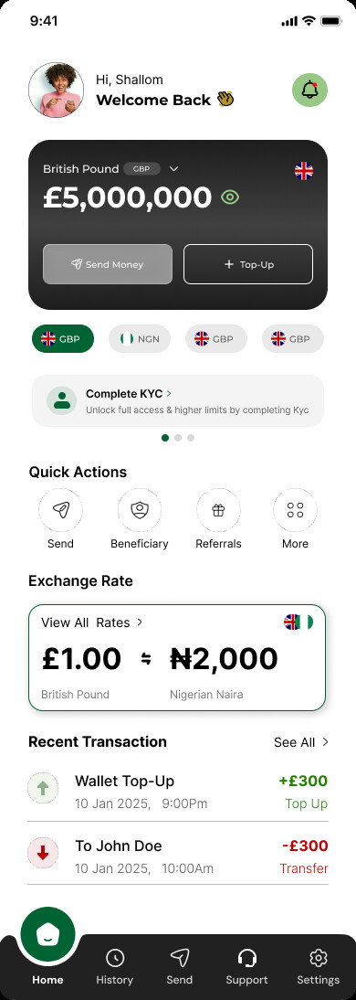
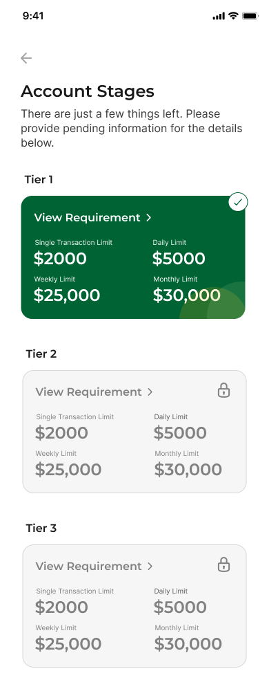
- Before: two small cards, the balance squeezed
- After: one full card, the whole number
- Tap a pill to switch currency
- “Complete KYC” is one tap away
Send first. Verify when it matters.
People can now skip KYC during onboarding. A “Complete KYC” card waits on the dashboard so nobody forgets. Tiers set how much you can send each day; to send more, you verify and upload your documents. The checks didn’t go away. They moved to the moment they make sense.
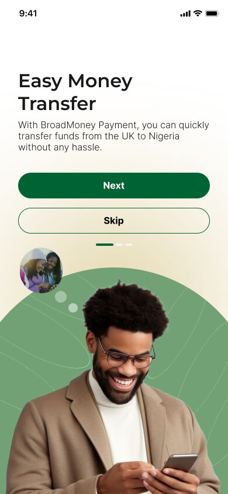
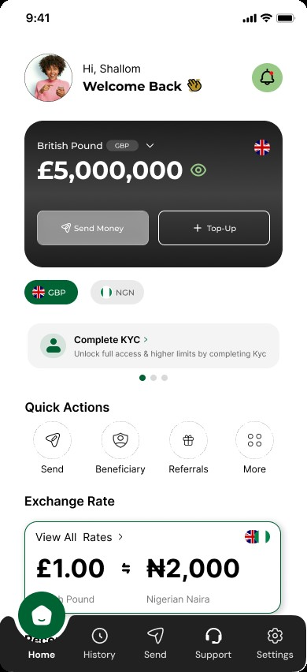


- Skip KYC and get into the app
- The dashboard reminds you, gently
- Tiers show what each level unlocks
- Want to send more? Upgrade your tier
- Verify, only now that it matters
55%→22%
New users made 2.3× as many transactions in their first month.
People finished onboarding, sent money and kept moving through the app: higher conversion, more time in the app and less drop-off. Measured in UXCam and PostHog on the same funnel, before and after launch.
I don’t stop at launch.
I brought in UXCam, then PostHog, then Microsoft Clarity, and I review the numbers every month. One recent find: BroadMoney doesn’t process transfers between 9pm and 5am, but a lot of people try to send in exactly that window.
My proposal: take the order at night, queue it and send it at 5am on the dot, telling people exactly what will happen and when. Fully transparent, and no lost transfers.
Everything design, for the whole company.
- The app and its design system, WCAG AA
- The website and the web app
- The BroadMoney brand
- Email templates
- Social media designs and kit
- Video ad designs
In an agile team, side by side with marketing and the CTO: constant iteration, and a lot of ideas brought to the table. In my words, “BMP has been a roller coaster.”


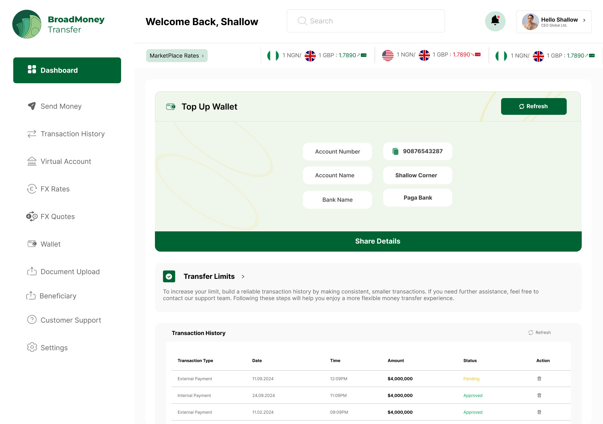
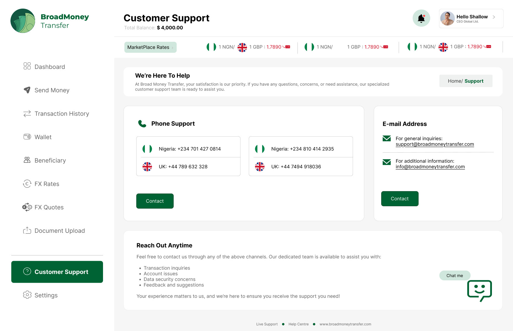
- Dashboard
- Send money
- Wallets
- Top up
- Support